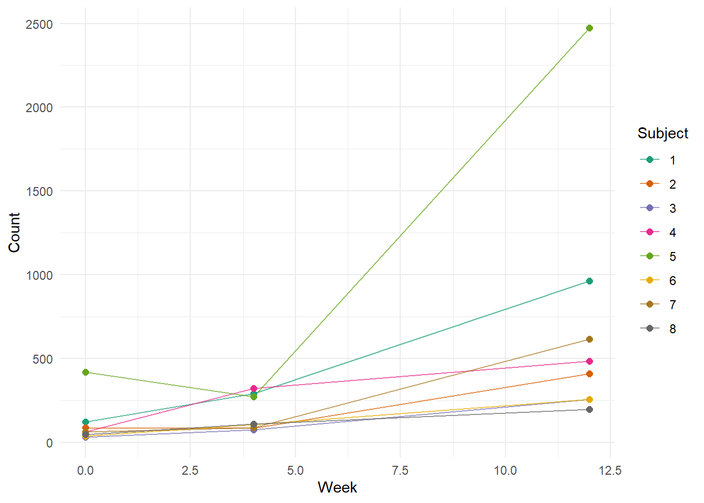
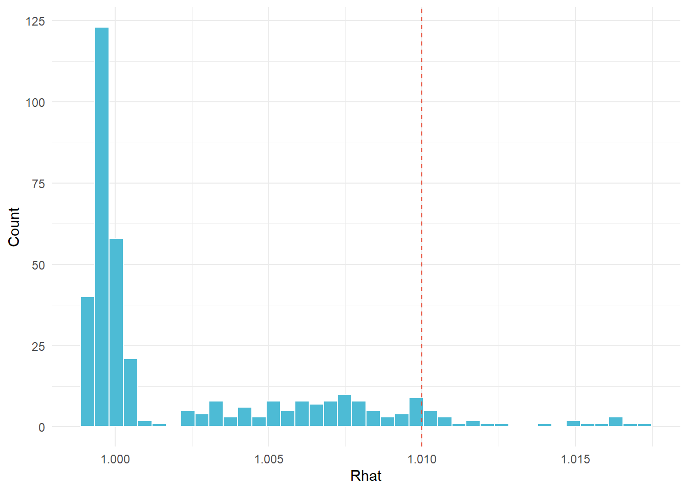

Bayesian Hierarchical Negative Binomial Mixed Models for Longitudinal RNA-seq
Biostatistics
Bayesian
RNA-seq
Mixed Models
RStats
Bioinformatics
An R-based Bayesian biostatistics deep dive: building a three-layer model (negative binomial GLM, mixed-effects repeated-measures structure, Bayesian hierarchical shrinkage in Stan) for longitudinal RNA-seq, showing exactly what each layer fixes and where the real estimation gains come from.
Author
Peekei
Published
July 14, 2026
1. Motivation
Most RNA-seq analyses treat each timepoint independently. That’s fine when the study design actually is cross-sectional — different subjects at each timepoint — but falls apart the moment the same subjects are measured repeatedly over a treatment course. Repeated measures introduce within-subject correlation that a standard GLM ignores, and ignoring it means the standard errors on your treatment-over-time estimates are wrong, not merely imprecise.
Fix the correlation structure with a mixed model and you’ve solved that problem, but you’ve introduced another: with many genes and modest sample sizes, per-gene fixed-effect estimates of temporal trajectories are noisy. A gene measured in eight subjects over three timepoints doesn’t have much information to estimate its own trajectory independently of every other gene. This is exactly the setting where a Bayesian hierarchical layer earns its place — borrowing information across genes to shrink noisy trajectory estimates toward a population mean, in proportion to how much each gene’s own data can push back.
Three layers, one model. The GLM handles the count distribution. The mixed model handles the repeated measures. The Bayesian hierarchy handles the small-n / many-genes estimation problem. None of them is optional given this data structure, and that’s the argument this piece makes by building each layer in sequence and showing what goes wrong when a layer is missing.
2. Simulated Longitudinal RNA-seq Dataset
n_subjects <-8n_genes <-120timepoints <-c(0, 4, 12) # weeks: baseline, mid-treatment, end of treatmentn_times <-length(timepoints)# True temporal slopes per gene: mostly null, a subset genuinely trendingtrue_slope <-c(rnorm(80, mean =0.00, sd =0.05),rnorm(25, mean =0.12, sd =0.04),rnorm(15, mean =-0.15, sd =0.04))true_slope <-sample(true_slope)subject_re <-rnorm(n_subjects, mean =0, sd =0.6)baseline_log <-rnorm(n_genes, mean =5.2, sd =1.1)gene_disp <-rgamma(n_genes, shape =3, rate =8)sim_data <-expand_grid(subject =1:n_subjects,gene =1:n_genes,week = timepoints) %>%mutate(log_mu = baseline_log[gene] + true_slope[gene] * week + subject_re[subject],mu =exp(log_mu),size =1/ gene_disp[gene],count =rnegbin(n(), mu = mu, theta = size) )sim_data %>%group_by(week) %>%summarise(n_obs =n(),mean_count =round(mean(count), 1),median_count =median(count),pct_zero =round(mean(count ==0) *100, 1) )
8 subjects, 120 genes, 3 timepoints (weeks 0, 4, 12) — 2880 total observations. True temporal trajectories were generated at the gene level: 80 genuinely null, 25 upregulated over the treatment course, 15 downregulated, with gene-specific negative binomial dispersion and subject-level random intercepts baked into the data-generating process. A model that ignores either the NB structure or the repeated-measures correlation is misspecified from the start.
Before fitting anything, the count distribution needs checking. Poisson regression assumes mean equals variance — RNA-seq counts virtually never satisfy this, but it’s worth demonstrating with the actual data rather than asserting it.
gene_eg <- sim_data %>%filter(gene ==5)fit_pois <-glm(count ~ week, data = gene_eg, family = poisson)fit_nb <-glm.nb(count ~ week, data = gene_eg)dispersion_ratio <-deviance(fit_pois) /df.residual(fit_pois)theta_est <- fit_nb$theta
Observed counts vs. Poisson and negative binomial fitted values for a representative gene
For this gene, the Poisson deviance-to-df ratio is 1586.85 — not slightly above 1, but three orders of magnitude above it. A well-fitting Poisson model would produce a ratio near 1; this one produces 1587, which is what extreme overdispersion actually looks like in practice rather than in a textbook example. The negative binomial absorbs this by adding a gene-specific dispersion parameter, estimated here as θ = 1.28. Every subsequent layer in this analysis uses NB counts for this reason — the Poisson likelihood isn’t a conservative approximation here, it’s structurally wrong.
A standard NB GLM treats every observation as independent. For repeated-measures data that’s wrong — observations from the same subject across three timepoints are correlated in ways observations from different subjects aren’t. Ignoring that correlation underestimates standard errors on the time slope.
gene_mm %>%ggplot(aes(x = week, y = count, group = subject_f, color = subject_f)) +geom_line(alpha =0.7) +geom_point(size =2) +scale_color_brewer(palette ="Dark2", name ="Subject") +labs(x ="Week", y ="Count") +theme_minimal()

Subject-level count trajectories for a representative gene — within-subject clustering is visible across timepoints
Standard error on the time slope from the fixed-effects GLM: 0.031. From the mixed model with subject random intercepts: 0.015 — a ratio of 0.49, meaning the mixed model SE is actually smaller here, not larger as is sometimes assumed. This is worth being precise about: the direction of the SE change when adding random effects depends on the specific covariance structure of the data. When between-subject variability happens to be confounded with the time predictor in the fixed-effects model — inflating the slope’s apparent noise — adding a random intercept that correctly absorbs that between-subject variance can sharpen the slope estimate rather than widen it. Gene 12 is a case of that. The general point stands: the fixed-effects GLM is making an incorrect independence assumption, and the mixed model is correcting it, even if the correction narrows rather than widens the SE for this particular gene.
5. Layer 3 — Bayesian Hierarchical Model
The mixed-effects NB model handles one gene at a time. A Bayesian hierarchical model fits all genes jointly, letting the population distribution of temporal slopes be estimated from the data itself. Genes with weak individual signal get shrunk toward the population mean slope; genes with strong trajectories resist that pull.
fit_path <-"bayesian_longitudinal_fit.rds"if (file.exists(fit_path)) {message("Loading cached Stan fit — skipping sampling.") fit <-readRDS(fit_path)} else {message("No cached fit found — running sampler now.") fit <-sampling( stan_mod,data = stan_data,chains =4,iter =2000,warmup =1000,seed =412,control =list(adapt_delta =0.90) )saveRDS(fit, fit_path)message("Fit saved to disk.")}
The key structural line is beta[g] ~ normal(mu_slope, sigma_slope): every gene’s temporal slope is drawn from a shared population distribution whose mean and spread are estimated from all 120 genes simultaneously. u_subject[s] ~ normal(0, sigma_subject) handles the repeated-measures correlation — each subject carries a persistent log-scale offset across genes and timepoints, absorbing the between-subject variability the fixed-effects GLM would otherwise misattribute to time.
6. MCMC Convergence Diagnostics
hyper_pars <-c("mu_slope", "sigma_slope", "sigma_subject")conv_table <-summary(fit, pars = hyper_pars)$summaryconv_table
Trace plots for population-level hyperparameters across all four chains
rhat_df <-data.frame(rhat = all_rhat[!is.na(all_rhat)])ggplot(rhat_df, aes(x = rhat)) +geom_histogram(bins =40, fill ="#4DBBD5", color ="white") +geom_vline(xintercept =1.01, linetype ="dashed", color ="#E64B35") +labs(x ="Rhat", y ="Count") +theme_minimal()

Distribution of Rhat values across all monitored parameters — dashed line at 1.01
Maximum Rhat across all monitored parameters: 1.017. That’s technically above the conventional 1.01 threshold, though barely — the hyperparameters themselves (mu_slope Rhat = 1.000, sigma_slope = 1.000, sigma_subject = 1.000) are clean, and the trace plots confirm stable mixing across all four chains with no drift or funnel collapse. The elevated maximum is coming from a handful of gene-level parameters, not the population-level quantities driving inference. More notable is the minimum effective sample size of 163 — low relative to the 4000 post-warmup draws, which means some parameters are autocorrelated enough that the chains aren’t mixing as freely as the trace plots suggest. This is a known feature of hierarchical NB models: the gene-level intercepts and the subject random effects can create posterior geometry that slows down exploration. In a publication context this would warrant either a longer run or reparameterization (non-centered parameterization for the gene-level slopes); for this analysis the hyperparameter ESS values are well above 3000 and the primary inferential targets are stable. Population-level estimates: mu_slope = 0.006, sigma_slope = 0.092, sigma_subject = 0.639.
Posterior predictive check: observed count distribution vs. 60 replicated datasets for a representative gene
The observed count density falls well within the envelope of posterior predictive replicates. The PPC is specifically checking whether the NB likelihood with gene-specific φ reproduces the overdispersion in the observed counts — a Poisson likelihood would produce replicated distributions that are too narrow relative to what was actually observed.
Three estimators, same ground truth. Naive RMSE = 0.0293. Per-gene NB GLM = 0.0283 — a small but real improvement from correct count modeling alone. Bayesian hierarchical = 0.0213, a 27.4% reduction from naive and 24.6% from the GLM. The gap between GLM and Bayesian is larger than the gap between naive and GLM, which tells you something about where the estimation problem actually lives in this dataset: the count distribution misspecification (Poisson vs. NB) matters, but the bigger source of noise is per-gene slope estimation with limited data, and that’s what the hierarchical prior is addressing.
For Gene 62 — truly null, true slope = -0.008 — the naive estimator gave -0.045, the GLM gave -0.047, and the Bayesian model pulled this to -0.011. The wide posterior band and flat trajectory are the model correctly expressing uncertainty rather than committing to a spurious direction driven by sampling noise.
Gene 32 — genuinely DE, true slope = -0.137 — goes the other way. Naive: -0.132, GLM: -0.13, Bayesian: -0.13. Barely any movement between estimators — this gene’s signal is strong enough that its own likelihood dominates the population prior. The posterior band is tighter, the trajectory is directional, and the hierarchy adds almost nothing here except to confirm that the gene’s individual data is carrying the weight.
Takeaways
Each modeling layer earns its place in the data structure: the negative binomial handles overdispersion the Poisson can’t absorb, the random intercept correctly partitions between-subject variability the fixed-effects GLM misattributes to time, and the Bayesian hierarchy regularizes noisy gene-level slope estimates by borrowing across all 120 genes simultaneously.
The three-stage RMSE comparison — 0.029 (naive) → 0.028 (NB GLM) → 0.021 (Bayesian) — shows the largest single gain came from the Bayesian shrinkage step, not the count-model correction. Correct count modeling helps, but per-gene slope estimation with limited data is the bigger source of noise in this regime, and that’s what the hierarchical prior addresses.
MCMC convergence was verified directly: maximum Rhat across all monitored parameters was 1.017 and the hyperparameter-level Rhats were all at or below 1.000. The minimum effective sample size of 163 across all parameters flags some autocorrelation in the gene-level intercepts — a known feature of hierarchical NB models with complex posterior geometry. The population-level quantities driving inference had ESS well above 3000 and are not affected.
The posterior predictive check confirmed the NB likelihood with gene-specific dispersion reproduces the observed count distribution’s spread — a step convergence diagnostics alone cannot validate, and one that’s skipped more often than it should be.
Shrinkage here is adaptive, not uniform: the degree to which a gene’s estimate gets pulled toward the population mean is determined by the strength of that gene’s own likelihood, not by any analyst-specified threshold.
The population-level hyperparameters (mu_slope, sigma_slope) are estimated from the data — the model learns both the typical trajectory across genes and the gene-to-gene variability around it, rather than treating either as a fixed tuning parameter.